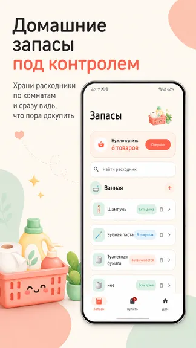
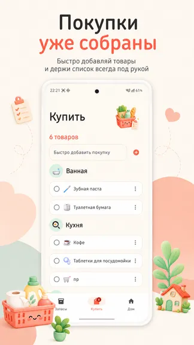
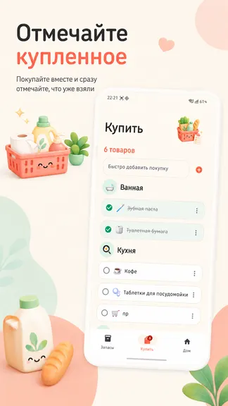
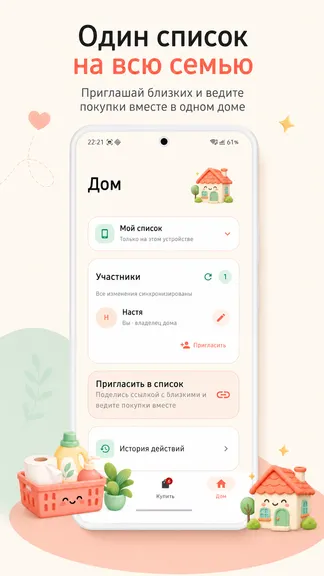
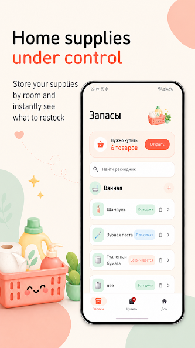
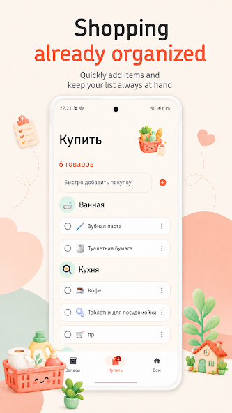
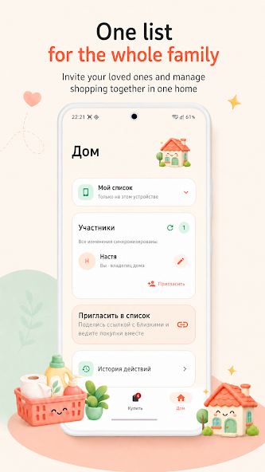
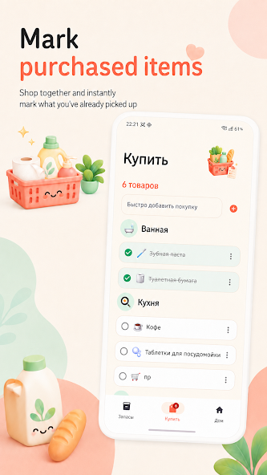

Покупки без забытых мелочей
- Общий списокСобирайте покупки всей семьи в одном понятном месте.
- Домашние запасыОтмечайте продукты и вещи, которые скоро закончатся.
- Планируйте вместеСинхронизируйтесь с близкими и не покупайте одно и то же дважды.
Список покупок · Android
Общий список покупок для семьи и домашние запасы в одном месте. Добавляйте то, что заканчивается, синхронизируйтесь с близкими и возвращайтесь из магазина со всем нужным.
Покупки · семья · домашние запасы







Сначала составьте меню и выберите рецепты в приложении «Что едим?», затем соберите необходимые продукты в «Докупить».